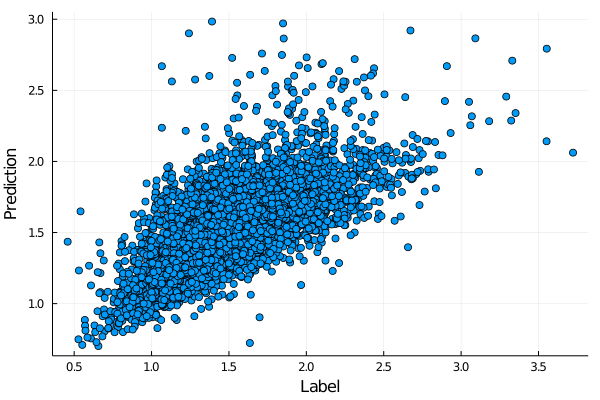

Linear regression revisited
This section revisits the linear regression. The classical statistical approach uses derives the same formulation for linear regression as the optimization approach. Besides point estimates for parameters, it also computes their confidence intervals and can test whether some parameters can be omitted from the model. We will start with hypothesis testing and then continue with regression.
Julia provides lots of statistical packages. They are summarized at the JuliaStats webpage. This section will give a brief introduction to many of them.
Theory of hypothesis testing
Hypothesis testing verifies whether data satisfy a given null hypothesis $H_0$. Most of the tests need some assumptions about the data, such as normality. Under the validity of the null hypothesis, the test derives that a transformation of the data follows some distribution. Then it constructs a confidence interval of this distribution and checks whether the transformed variable lies in this confidence interval. If it lies outside of it, the test rejects the null hypothesis. In the opposite case, it fails to reject the null hypothesis. The latter is different from confirming the null hypothesis. Hypothesis testing is like a grumpy professor during exams. He never acknowledges that a student knows the topic sufficiently, but he is often clear that the student does not know it.
An example is the one-sided Student's t-test that verifies that a one-dimensional dataset has mean $\mu$. It can be generalized to compare the mean (performance) of two datasets. Under some assumptions, it derives that
\[t = \sqrt{n}\frac{\hat \mu - \mu}{\hat\sigma}\]
follows the Student's distribution with $n-1$ degrees of freedom. Here, $n$ is the number of datapoints. Their mean is $\hat \mu$ and their standard deviation $\hat \sigma$. Instead of computing the confidence interval, the usual way is to define the $p$-value
\[p = 2\min\{\mathbb P(T\le t \mid H_0), \mathbb P(T\ge t\mid H_0)\}\]
If the $p$-value is smaller than a given threshold, usually $5\%$, the null hypothesis is rejected. In the opposite case, it is not rejected. The $p$-value is a measure of the probability that an observed difference could have occurred just by random chance.
Hypothesis testing
We first randomly generate data from the normal distribution with zero mean.
using Random
using Statistics
using LinearAlgebra
using Plots
Random.seed!(666)
n = 1000
xs = randn(n)The following exercise performs the $t$-test to check whether the data come from a distribution with zero mean.
Use the $t$-test to verify whether the samples were generated from a distribution with zero mean.
Hints:
- The Student's distribution is invoked by
TDist(). - The probability $\mathbb P(T\le t)$ equals to the distribution function $F(t)$, which can be called by
cdf.
Solution:
We compute the statistic $t$, then define the Student's distribution with $n-1$ degrees of freedom, evaluate the distribution function at $t$ and finally compute the $p$-value.
using Distributions
t = mean(xs) / std(xs) * sqrt(n)
prob = cdf(TDist(n-1), t)
p = 2*min(prob, 1-prob)0.8126254291647653The $p$-value is significantly larger than $5\%$. Therefore, we cannot reject the zero hypothesis, which is fortunate because the data were generated from the normal distribution with zero mean.
Even though the computation of the $p$-value is simple, we can use the HypothesisTests package. When we run the test, it gives us the same results as we computed.
using HypothesisTests
OneSampleTTest(xs)One sample t-test
-----------------
Population details:
parameter of interest: Mean
value under h_0: 0
point estimate: -0.00757099
95% confidence interval: (-0.0702, 0.0551)
Test summary:
outcome with 95% confidence: fail to reject h_0
two-sided p-value: 0.8126
Details:
number of observations: 1000
t-statistic: -0.23710308716358652
degrees of freedom: 999
empirical standard error: 0.03193122639534273
Theory of generalized linear models
The statistical approach to linear regression is different from the one from machine learning. It also assumes a linear prediction function:
\[\operatorname{predict}(w;x) = w^\top x.\]
Then it considers some invertible link function $g:\mathbb R\to \mathbb R$ and assumes that $y$ conditioned on $x$ follows an apriori specified distribution with density $f$. The parameters of this distribution are unknown, but the distribution should satisfy the conditional expectation $E(y\mid x) = g^{-1}(w^\top x)$. The goal is to find the weights $w$ by the maximum likelihood estimate. This technique maximizes the likelihood function:
\[\operatorname{maximize}\qquad \prod_{i=1}^n f(y_i).\]
Since the density is the derivative of the distribution function, the term $f(y_i)$ describes the "probability" of $y_i$ under density $f$. If $y_i$ are independent, then the product is the joint probability for all samples. Therefore, maximizing the likelihood function amounts to finding the parameters of the apriori specified distribution such that the observed samples $y_i$ have the highest probability. Since these distributions are usually taken from the exponential family, the log-likelihood
\[\operatorname{maximize}\qquad \sum_{i=1}^n \log f(y_i).\]
is often maximized. Since the logarithm is an increasing function, these two formulas are equivalent.
Case 1: Linear regression
The first case considers $g(z)=z$ to be the identity function and $y\mid x$ with the normal distribution $N(\mu_i, \sigma^2)$. Then
\[w^\top x_i = g^{-1}(w^\top x_i) = \mathbb E(y_i \mid x_i) = \mu_i,\]
and, therefore, we need the solve the following optimization problem:
\[\operatorname{maximize}_w\qquad \sum_{i=1}^n \log \left(\frac{1}{\sqrt{2\pi\sigma^2}}\exp\left(\frac{-(y_i - w^\top x_i)^2}{2\sigma^2}\right)\right).\]
Since we maximize with respect to $w$, most terms behave like constants, and this optimization problem is equivalent to
\[\operatorname{minimize}_w\qquad \sum_{i=1}^n (y_i - w^\top x_i)^2.\]
This is precisely linear regression as derived in the previous lectures.
Case 2: Logistic regression
The second case considers $g(z)=\log z$ to be the logarithm function and $y\mid x$ with the Poisson distribution $Po(\lambda)$. The inverse function to $g$ is $g^{-1}(z)=e^z$. Since the Poisson distribution has non-negative discrete values with probabilities $\mathbb P(Y=k) = \frac{1}{k!}\lambda^ke^{-\lambda}$, labels $y_i$ must also be non-negative integers. The same formula for the conditional expectation as before yields:
\[e^{w^\top x_i} = g^{-1}(w^\top x_i) = \mathbb E(y_i \mid x_i) = \lambda_i.\]
Plugging this term into the log-likelihood function results in the following optimization problem:
\[\operatorname{maximize}_w\qquad \sum_{i=1}^n\log\left( \frac{1}{y_i!}\lambda_i^{y_i} e^{-\lambda_i}\right).\]
By using the formula for $\lambda_i$ and getting rid of constants, we transform this problem into
\[\operatorname{minimize}_w\qquad \sum_{i=1}^n \left(e^{w^\top x_i} - y_iw^\top x_i\right).\]
This function is similar to the one derived for logistic regression.
Linear models
We will use the Employment and Wages in Spain dataset because it is slightly larger than the iris dataset. It contains 5904 observations of wages from 738 companies in Spain from 1983 to 1990. We will estimate the dependence of wages on other factors such as employment or cash flow. We first load the dataset and transform the original log-wages into non-normalized wages. We use base $2$ to obtain relatively small numbers.
using RDatasets
wages = dataset("plm", "Snmesp")
wages.W = 2. .^ (wages.W)We can use the already known procedure to compute the best fit.
X = Matrix(wages[:, [:N, :Y, :I, :K, :F]])
X = hcat(ones(size(X,1)), X)
y = wages[:, :W]
w0 = (X'*X) \ (X'*y)Another possibility is to use the package GLM and its command lm for linear models.
using GLM
model = lm(@formula(W ~ 1 + N + Y + I + K + F), wages)StatsModels.TableRegressionModel{GLM.LinearModel{GLM.LmResp{Vector{Float64}}, GLM.DensePredChol{Float64, LinearAlgebra.CholeskyPivoted{Float64, Matrix{Float64}}}}, Matrix{Float64}}
W ~ 1 + N + Y + I + K + F
Coefficients:
─────────────────────────────────────────────────────────────────────────────────
Coef. Std. Error t Pr(>|t|) Lower 95% Upper 95%
─────────────────────────────────────────────────────────────────────────────────
(Intercept) -0.233407 0.0262272 -8.90 <1e-18 -0.284821 -0.181992
N -0.399454 0.00760488 -52.53 <1e-99 -0.414362 -0.384545
Y 1.27339 0.024799 51.35 <1e-99 1.22477 1.322
I -0.806594 0.0187143 -43.10 <1e-99 -0.843281 -0.769907
K 0.00869993 0.00408397 2.13 0.0332 0.000693846 0.016706
F -3.44324e-5 5.93769e-6 -5.80 <1e-08 -4.60725e-5 -2.27924e-5
─────────────────────────────────────────────────────────────────────────────────The table shows the parameter values and their confidence intervals. Besides that, it also tests the null hypothesis $H_0: w_j = 0$ whether some of the regression coefficients can be omitted. The $t$ statistics is in column t, while its $p$-value in column Pr(>|t|). The next exercise checks whether we can achieve the same results with fewer features.
Check that the solution computed by hand and by lm are the same.
Then remove the feature with the highest $p$-value and observe whether there was any performance drop. The performance is usually evaluated by the coeffient of determination denoted by $R^2\in[0,1]$. Its higher values indicate a better model.
Hint: Use functions coef and r2.
Solution:
Since the parameters for both approaches are almost the same, the approaches give the same result.
norm(coef(model) - w0)1.8397754643644502e-13The table before this exercise shows that the $p$-value for feature $K$ is $3.3\%$. We define the reduced model without this feature.
model_red = lm(@formula(W ~ 1 + N + Y + I + F), wages)StatsModels.TableRegressionModel{GLM.LinearModel{GLM.LmResp{Vector{Float64}}, GLM.DensePredChol{Float64, LinearAlgebra.CholeskyPivoted{Float64, Matrix{Float64}}}}, Matrix{Float64}}
W ~ 1 + N + Y + I + F
Coefficients:
────────────────────────────────────────────────────────────────────────────────
Coef. Std. Error t Pr(>|t|) Lower 95% Upper 95%
────────────────────────────────────────────────────────────────────────────────
(Intercept) -0.252352 0.0246807 -10.22 <1e-23 -0.300735 -0.203969
N -0.398952 0.0076035 -52.47 <1e-99 -0.413857 -0.384046
Y 1.29473 0.0226924 57.06 <1e-99 1.25024 1.33922
I -0.818356 0.0178865 -45.75 <1e-99 -0.85342 -0.783292
F -3.43501e-5 5.93935e-6 -5.78 <1e-08 -4.59934e-5 -2.27068e-5
────────────────────────────────────────────────────────────────────────────────Now we show the performances of both models.
(r2(model), r2(model_red))(0.5093216904820241, 0.5089441549925815)Since we observe only a small performance drop, we could omit this feature without changing the model prediction capability.
The core assumption of this approach is that $y$ follows the normal distribution. We use the predict function for predictions and then use the plot_histogram function written earlier to plot the histogram and a density of the normal distribution. For the normal distribution, we need to specify the correct mean and variance.
y_hat = predict(model)
plot_histogram(y_hat, x -> pdf(Normal(mean(y_hat), std(y_hat)), x))Another possibility would be the fit function from the Distributions package.
plot_histogram(y_hat, x -> pdf(fit(Normal, y_hat), x))The results look identical. The distribution resembles the normal distribution, but there are some differences. We can use the more formal Kolmogorov-Smirnov, which verifies whether a sample comes from some distribution.
test_normality = ExactOneSampleKSTest(y_hat, Normal(mean(y_hat), std(y_hat)))Exact one sample Kolmogorov-Smirnov test
----------------------------------------
Population details:
parameter of interest: Supremum of CDF differences
value under h_0: 0.0
point estimate: 0.0217836
Test summary:
outcome with 95% confidence: reject h_0
two-sided p-value: 0.0073
Details:
number of observations: 5904
The result is expected. The $p$-value is close to $1\%$, which means that we reject the null hypothesis that the data follow the normal distribution even though it is not entirely far away.
Generalized linear models
While the linear models do not transform the labels, the generalized models transform them by the link function. Moreover, they allow choosing other than the normal distribution for labels. Therefore, we need to specify the link function $g$ and the distribution of $y \mid x$.
We repeat the same example with the link function $g(z) = \sqrt{z}$ and the inverse Gaussian distribution for the labels. Since we want to use the generalized linear model, we replace lm by glm.
model = glm(@formula(W ~ 1 + N + Y + I + K + F), wages, InverseGaussian(), SqrtLink())StatsModels.TableRegressionModel{GLM.GeneralizedLinearModel{GLM.GlmResp{Vector{Float64}, Distributions.InverseGaussian{Float64}, GLM.SqrtLink}, GLM.DensePredChol{Float64, LinearAlgebra.Cholesky{Float64, Matrix{Float64}}}}, Matrix{Float64}}
W ~ 1 + N + Y + I + K + F
Coefficients:
────────────────────────────────────────────────────────────────────────────────
Coef. Std. Error z Pr(>|z|) Lower 95% Upper 95%
────────────────────────────────────────────────────────────────────────────────
(Intercept) 0.464875 0.00920656 50.49 <1e-99 0.446831 0.48292
N -0.186646 0.00294066 -63.47 <1e-99 -0.19241 -0.180883
Y 0.591837 0.00980902 60.34 <1e-99 0.572611 0.611062
I -0.384294 0.00759787 -50.58 <1e-99 -0.399185 -0.369402
K 0.00666287 0.00147633 4.51 <1e-05 0.00376931 0.00955643
F -2.28629e-5 2.672e-6 -8.56 <1e-16 -2.80999e-5 -1.76259e-5
────────────────────────────────────────────────────────────────────────────────The following exercise plots the predictions for the generalized linear model.
Create the scatter plot of predictions and labels. Do not use the predict function.
Solution:
Due to the construction of the generalized linear model, the prediction equals $g^{-1}(w^\top x)$. We save it into $\hat y$.
g_inv(z) = z^2
y_hat = g_inv.(X*coef(model))The scatter plot is now simple.
scatter(y, y_hat;
label="",
xlabel="Label",
ylabel="Prediction",
)
savefig("glm_predict.svg")